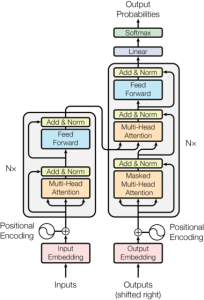

Archivo editorial de Creangel. Las referencias, cifras y condiciones corresponden a la publicación original.
Introducción al mecanismo de atención en Transformers
Qué es la Atención?
La atención es como cuando lees una frase y tu cerebro decide qué palabras son más importantes para entender el significado.

Introducción al mecanismo de atención en Transformers
Atención con Producto Punto Escalado
Es una fórmula matemática que funciona así:
- Comparar: Toma una palabra (consulta) y la compara con todas las demás palabras (claves)
- Calcular pesos: Da más importancia a las palabras más relacionadas
- Combinar: Mezcla toda la información según esos pesos
Fórmula: Atención(Q,K,V) = softmax(QK^T/√dk)V
Atención Multi-Cabeza
En lugar de usar una sola “cabeza” de atención, usa varias (8 en este caso):
- Cada cabeza se enfoca en diferentes aspectos de las relaciones entre palabras
- Es como tener 8 perspectivas diferentes del mismo texto
- Al final se combinan todas las perspectivas
Tres Usos en el Transformer:
- Encoder-Decoder: El decodificador mira toda la entrada
- Auto-atención en Encoder: Cada palabra mira a todas las demás en su capa
- Auto-atención en Decoder: Cada palabra solo mira las anteriores (no puede “hacer trampa” viendo el futuro)
En resumen: Es un mecanismo que ayuda al modelo a entender qué partes del texto son más relevantes para cada palabra.
En la fórmula Attention(Q,K,V) = softmax(QK^T/√dk)V, la T significa transpuesta.
¿Qué es la transpuesta?
La transpuesta de una matriz significa voltear la matriz intercambiando filas por columnas.
Ejemplo:
Matriz original K: Transpuesta K^T:
[1 2 3] [1 4]
[4 5 6] [2 5]
[3 6]
¿Por qué se usa K^T?
Para poder hacer la multiplicación de matrices entre Q y K:
- Q tiene dimensiones: (número de consultas × dk)
- K tiene dimensiones: (número de claves × dk)
- K^T tiene dimensiones: (dk × número de claves)
Entonces:
- Q × K^T = (número de consultas × dk) × (dk × número de claves)
- Resultado = (número de consultas × número de claves)
Esto nos da una matriz donde cada elemento representa qué tan compatible es cada consulta con cada clave.
En código Python:
python
scores = torch.matmul(query, key.transpose(-2, -1))
El .transpose(-2, -1) es equivalente a poner la T (transpuesta).
dk es la dimensión de las claves y consultas.
Definición Simple
dk = el número de elementos (características) que tiene cada vector de clave y consulta.
En el Contexto del Transformer
Según el documento:
- dk = dv = dmodel/h = 64
Donde:
- dmodel = dimensión total del modelo (por ejemplo, 512)
- h = número de cabezas de atención (8 en este caso)
- dk = 512 ÷ 8 = 64
¿Por qué es Importante?
Se usa en dos lugares clave:
- En la división por √dk:
scores = QK^T / √dk
- Si dk = 64, entonces √dk = 8
- Esto normaliza los puntajes para evitar que sean muy grandes
- En las dimensiones de las matrices:
- Cada vector de consulta (Q) tiene 64 elementos
- Cada vector de clave (K) tiene 64 elementos
- Cada vector de valor (V) también tiene 64 elementos
¿Por qué Dividir por √dk?
Como explica el documento: cuando dk es grande, los productos punto QK^T se vuelven muy grandes, haciendo que la función softmax tenga gradientes muy pequeños. Dividir por √dk estabiliza el entrenamiento.
Ejemplo: Si dk = 64, dividimos por √64 = 8 para mantener los valores en un rango razonable.